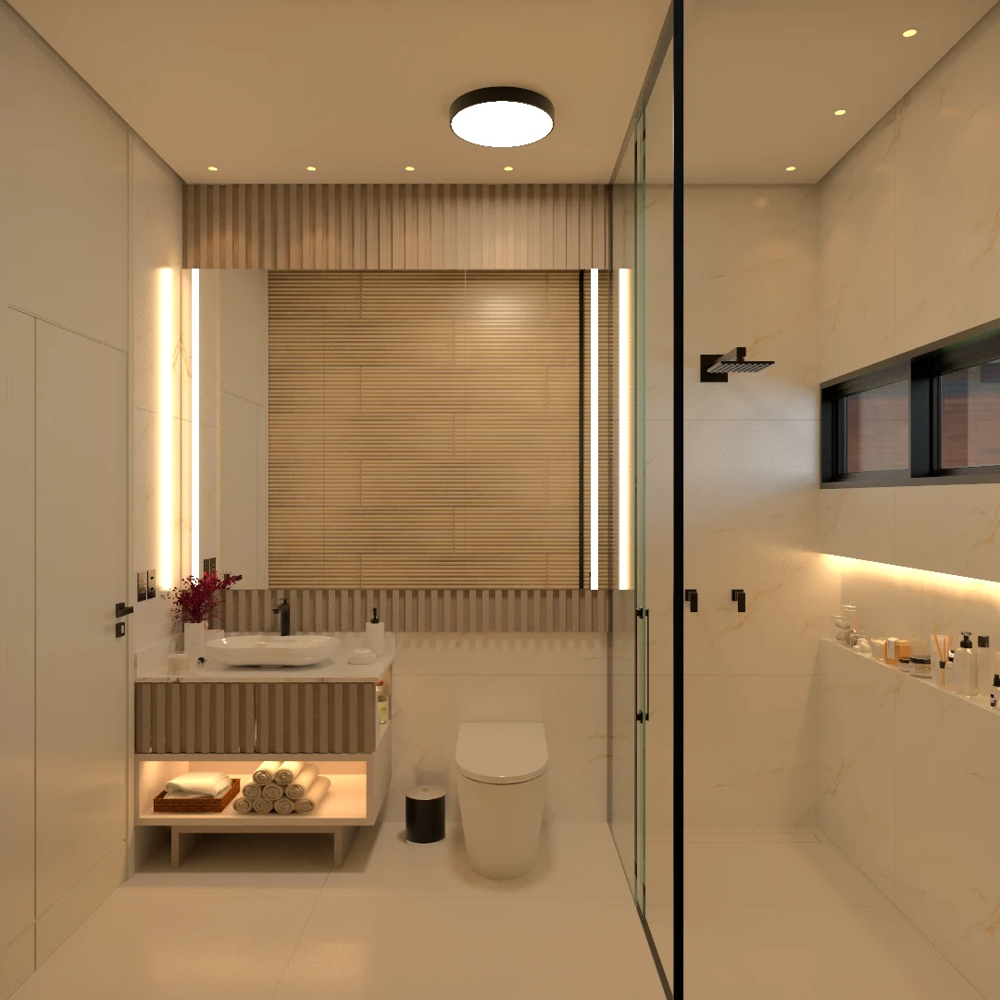
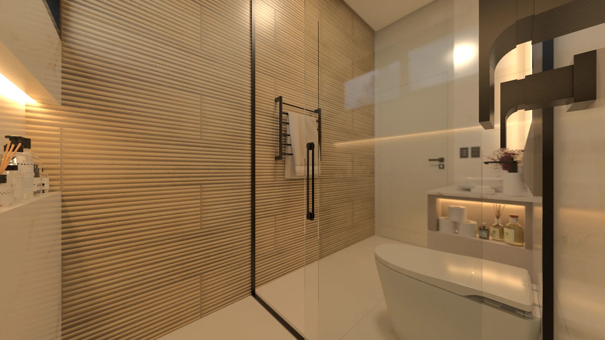

PEDRA · MADEIRA · LUZ03 / BANHEIRO SOCIAL
O AMBIENTE
A pausa também
é arquitetura.
Superfícies claras, ritmos amadeirados e linhas de luz desenham um espaço de cuidado. A delicadeza dos encontros transforma os gestos cotidianos em uma pausa.
Conhecer os elementos ↗
O projeto em imagens ↗DO ESPAÇO AO DETALHE
Cada peça.
Seu próprio olhar.
Abra os modelos individuais para girar, aproximar e consultar os materiais de cada conjunto.
Explorar especificações ↗BANHEIRO SOCIAL
Tour 3D
CATÁLOGO DO BANHEIRO
Matéria, forma
e função.
Móveis, conjuntos e referências de acabamentos.
MODELO INDIVIDUAL
DOCUMENTAÇÃO EXECUTIVA
Detalhamento
executivo.
Banheiro social.
Detalhamento do banheiro social · R01 · 21 páginas.
Plantas, vistas, acabamentos, iluminação e detalhamento de marcenaria.
Abrir pranchas ↗PERSPECTIVAS DO AMBIENTE
O banheiro,
em imagens.
Seis pontos de vista do projeto.